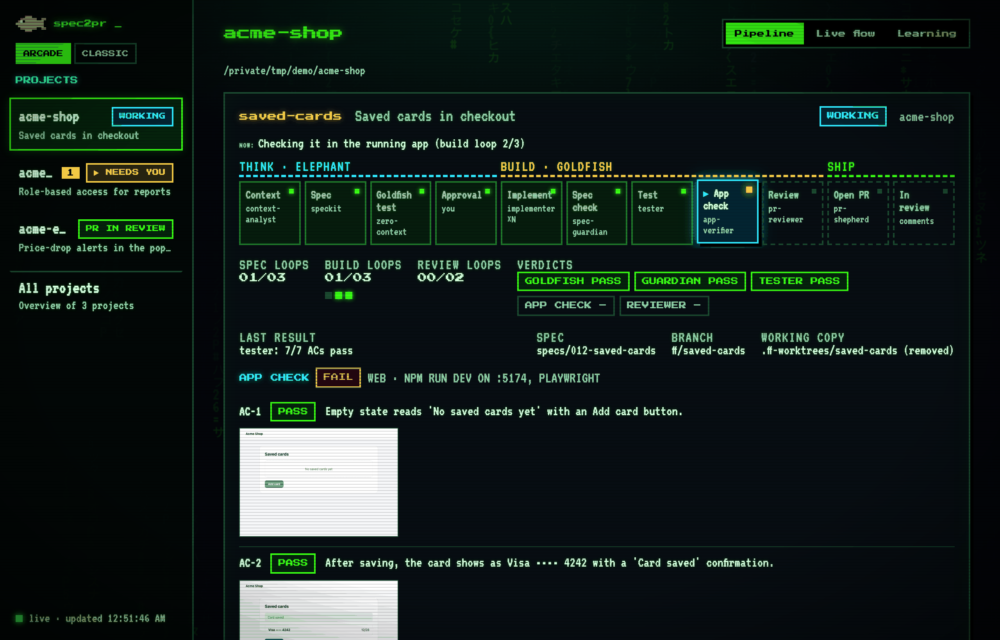
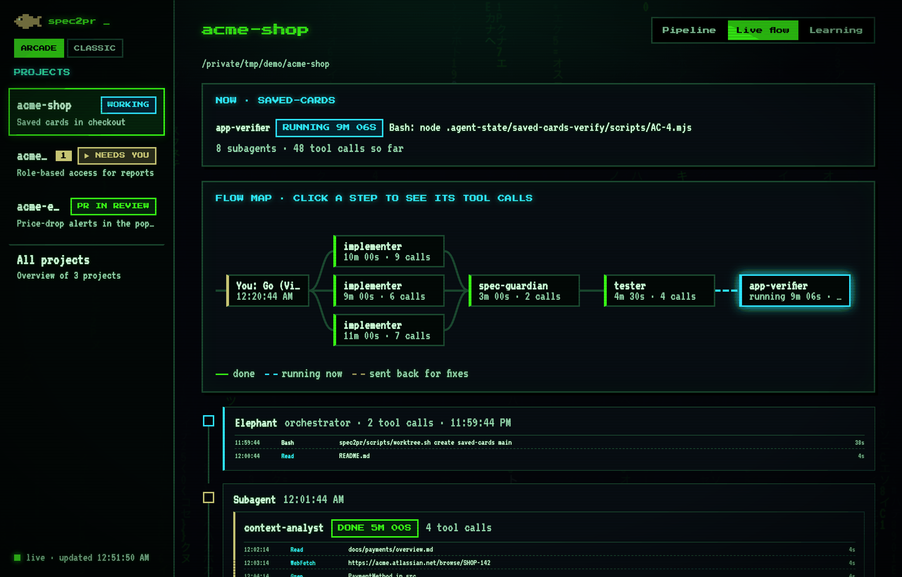
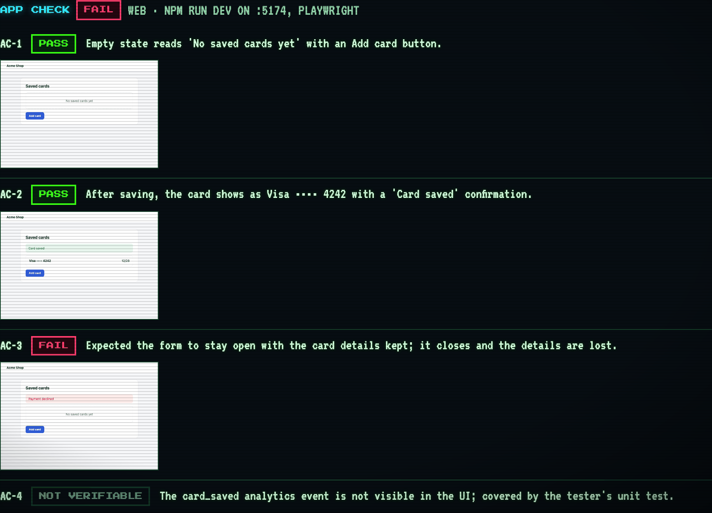
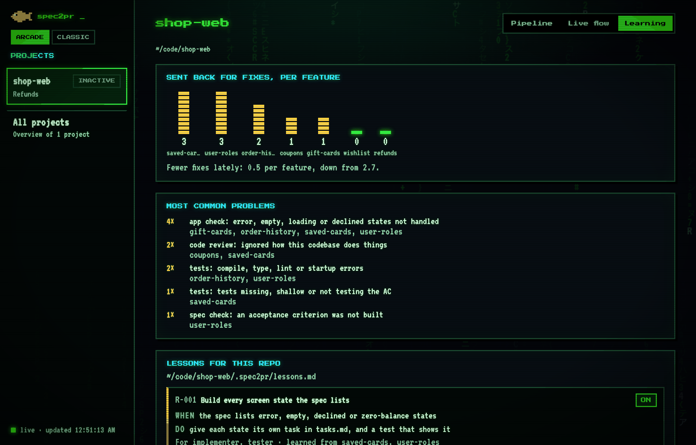

Give Claude Code a ticket.
Get back a reviewed, tested pull request.
spec2pr writes the spec, checks it's clear enough to build from, builds the feature with a team of agents, tests it, tries it in your real app, reviews it and opens the PR, asking you whenever a decision is yours.
claude plugin marketplace add paulpriyam/spec2prclaude plugin install spec2pr@spec2prAn example run, sped up. Every step shows up live on your own dashboard.
One elephant. Many goldfish.
AI agents are fast, but on real features they drift: they guess when the requirements are vague, mark their own homework, and forget decisions made an hour ago. spec2pr is built on three rules that stop that.
One agent remembers everything
The elephant talks to you, writes the spec and records every decision in it. It never writes code itself, so it never loses the big picture.
Every other agent starts fresh
Goldfish get only the spec and the files they need. If a goldfish can't build from the spec alone, the spec gets fixed before a single line of code is written.
Nobody checks their own work
The code is checked against the spec, tested, tried in the running app and reviewed, each time by an agent that never saw how it was written.
From ticket to pull request
Type /ship-feature PROJ-123 (or a GitHub issue, or just an idea) and spec2pr
takes it from there.
- UnderstandReads the ticket, linked docs and designs. Asks you about anything unclear.
- SpecWrites the spec and plan, then tests it on a goldfish until it's buildable from the spec alone.
- You approveA card on your dashboard shows the plan. Press Go, or ask for changes.
- BuildAgents build in parallel, each in the feature's own copy of your repo.
- CheckThe code is compared with the spec, line by line, by a fresh agent.
- TestA test is written and run for every acceptance criterion.
- Try itAn agent opens the real app and checks each criterion like a user, with screenshots.
- Review & PRAn independent review, then the pull request. Merging stays your call.
Anything that fails goes back to the builders, with a cap on retries, so a stuck feature stops and asks you instead of looping forever. Nothing is committed until every check has passed.
Watch it work
A dashboard on your own machine shows every project, every feature and every agent, updated live.
It comes in an 8-bit Arcade look: a pixel goldfish, a quiet digital rain and terminal-green text, with only the Needs you card calling for your attention. The running stage lights up and loop counters read like a scoreboard, with lives for the fix rounds left. One switch flips back to the Classic look, and animations stop if your system asks for reduced motion.

Where every feature is
Each stage from requirements to pull request, what's happening right now, and the result of every check. All your projects sit in the panel on the left.

What the agents are doing
A flow map of the whole run: agents working side by side, the one running now, and where work was sent back for fixes. Click any step to see every command it ran. Each agent shows its estimated cost, and one that keeps hitting the same failure is flagged as a possible loop.

Decisions come to you
When a call is yours, you get a desktop notification and a card with buttons. Answer there or in the terminal, whichever is closer.

Proof it works
For every acceptance criterion: pass or fail, what was expected, what actually happened, and a screenshot from the running app.

It gets better with every feature
Every finished feature leaves a record of what had to be fixed and why. When a problem shows up a second time, spec2pr turns it into a short lesson and gives it to the right agents next time. Lessons that don't help get rewritten, and you can switch any of them off.

Checked in your real app
Tests aren't the whole story, so an agent opens the app and uses it. Free tools, all on your machine; spec2pr asks before installing anything.
Get started in two commands
You need Claude Code, git, Python 3, Node and the GitHub CLI. Specs are written with spec-kit.
claude plugin marketplace add paulpriyam/spec2prclaude plugin install spec2pr@spec2prThen restart Claude Code, open your project and type
/ship-feature followed by a ticket, an issue or an idea.
| /ship-feature PROJ-123 | Take a feature from ticket to pull request |
| /verify-feature | Check work in progress in the running app, then decide what's next |
| /feature-dashboard | Open the dashboard |
| /telegram-setup | Answer its questions from your phone, via your own Telegram bot |
| /goldfish-check spec.md | Could someone build from this doc alone? |